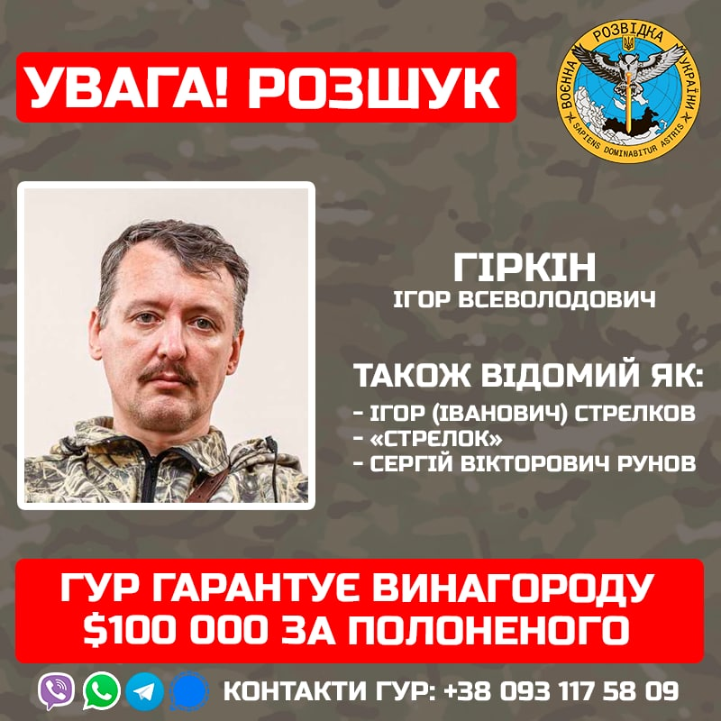

Головне управління розвідки Міністерства оборони призначило нагороду в розмірі $100 000 за затримання чи передачу в полон російського бойовика Ігоря Гіркіна, повідомила пресслужба відомства.
Гіркін (також відомий як Ігор Стрєлков, Стрєлок та Сергій Рунов) розшукується в Україні за терористичну діяльність, тортури, вбивства та порушення державного суверенітету.
Нідерланди оголосили його у міжнародний розшук у справі про збиття цивільного Boeing 777 рейсу MH17 у 2014 році.
Інформацію про Гіркіна можна передати за номером +380 93 117 5809. Зв’язок можливий через Viber, WhatsApp, Telegram, Signal.
Читайте також: Інтерв'ю Гіркіна Гордону: 20 000 дизлайків та визнання у вбивствах українців
Посилання на джерело